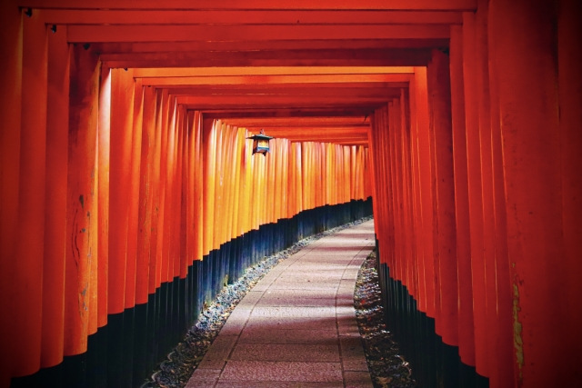
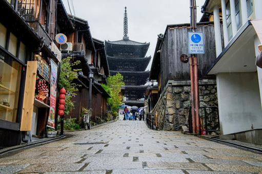
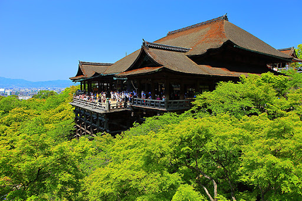
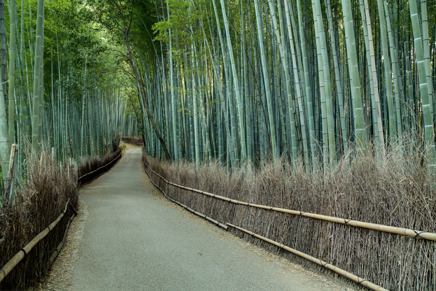

思わず訪れたくなる京都の魅力
京都は1000年以上にわたり日本の中心として栄え、 今もなお歴史と文化が息づく特別な街です。
世界遺産に登録された寺院や神社、 石畳が続く美しい街並み、 四季折々に表情を変える自然。
春には桜が咲き誇り、 夏には祇園祭が街を彩り、 秋には鮮やかな紅葉が寺社を包み込み、 冬には静寂の中で雪景色が広がります。
歴史を感じる旅も、 美味しいグルメ巡りも、 写真撮影も、 京都ならきっと忘れられない思い出になるでしょう。
春の京都散策。

静かな千本鳥居。

しっとりとした古都。


気になるスポットをクリック